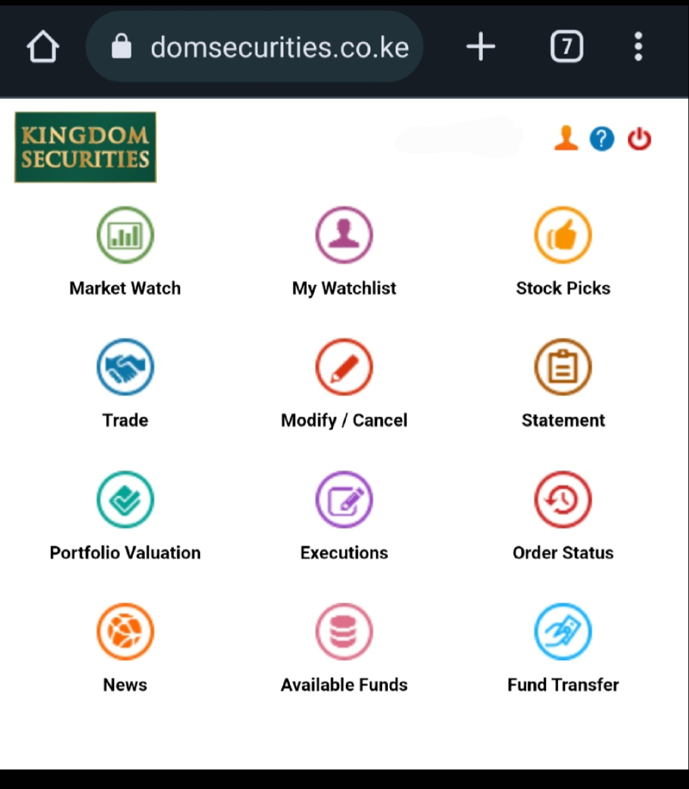
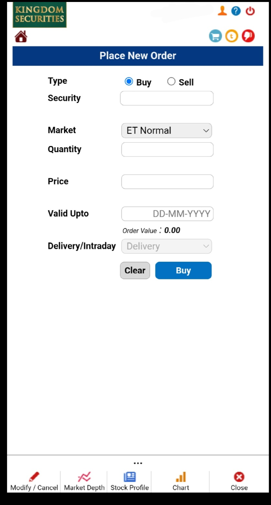

How to buy Safaricom shares
Step into the world of Safaricom, where every day, millions of Kenyans entrust their communication needs to the innovative products and services offered by this industry giant. From the innovative Mpesa to their reliable airtime, data, and SMS offerings, Safaricom has woven itself into the very fabric of our lives. With its solid financial performance and the generous dividends it consistently pays, it's no surprise that Safaricom is a beacon of profitability. Now, imagine becoming part of this success story - a shareholder in one of Kenya's most iconic companies. With this guide, you're just a few steps away from unlocking the door to a world of possibilities with Safaricom PLC.
Buy Safaricom shares online
These are some of the steps on how to buy Safaricom shares online
Requirements:
cds account
If you do not have a cds account yet follow this link to a step by step guide on : how to buy shares in kenya.
- funds
look up today's Safaricom shares price.On 30thMay one Safaricom share is at 16.00ksh . Safaricom Plc shareprice performance. Remember to top up the amount because there are transaction fees
In this case i will show you how to buy Safaricom shares using kingdom securities
- Head over to KingdomSecurities.co.ke
- Then click Trade online
- You will be taken to online trade login
- login using your username and password
- You will be taken to the kingdom securities dashboard 
- Click on Trade 
- Enter the security as Safaricom or SCOM
- Enter the quanity eg 100 (shares are bought in lots of 100),price and choose a valid date then click buy
- confirm order
- If a person in the market wants to sell their shares and you match on the price your trade will go through.
- You will receive an email stating that Safaricom shares have been purchased
- On your portfolio it should reflect you have bought Safaricom shares
Placing an order
- walk in to you stockbroker and instruct them to buy Safaricom shares for you
- Some stockbrokers allow one to send them an email requesting to buy shares
By using bonga points
- Dial *126#.
- Select 1: Lipa na Bonga
- Select 2: Pay Bill
- The paybill number is provided by your stockbroker
- Enter your CDS (account number) followed by the amount and confirm.
As a shareholder of Safaricom PLC, there are several perks that you can enjoy, including:
- Dividends: As one of the most profitable companies in Kenya, Safaricom pays generous dividends to its shareholders. This means that you can earn a regular income from your investment.
- Capital appreciation: Over time, the value of your Safaricom shares may increase, providing you with a capital gain if you decide to sell your shares.
- Voting rights: As a shareholder, you have the right to vote on important company decisions such as electing directors or approving major transactions.
- Stability: Safaricom has a proven track record of stability and growth, making it a reliable investment choice for those seeking long-term financial security.
- Influence: By owning shares in the company, you become a part-owner of Safaricom and can influence its direction through your participation in shareholder meetings and voting.
- Prestige: Being a shareholder in one of Kenya's most iconic companies is a mark of prestige and can be seen as a symbol of success and financial savvy.